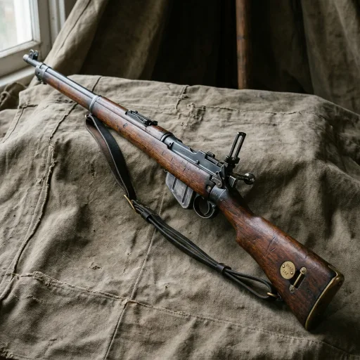

Karabin Lee-Metford .303
Lee-Metford .303 Bolt-Action Service Rifle
Prompt studyjny
Photorealistic Victorian object study of a British military Lee-Metford .303 bolt-action service rifle with full-length walnut stock and blued steel action, resting on heavy canvas tent cloth, soft late Victorian daylight, square composition, no hands, no people